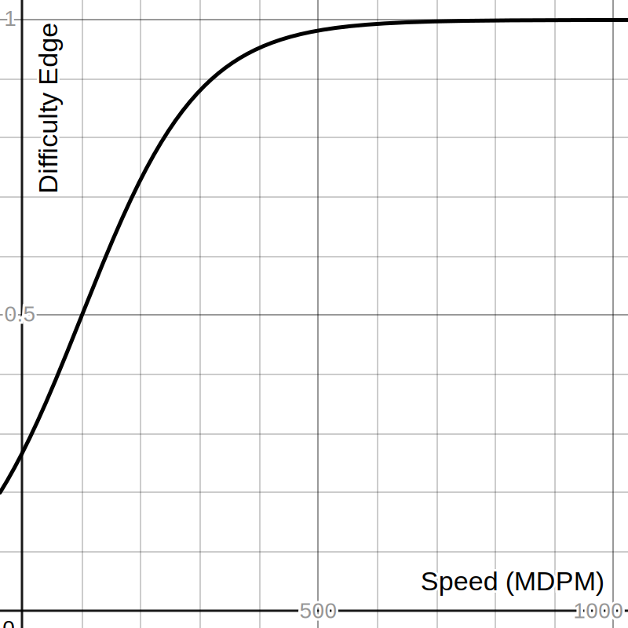

APoW, or Adjusted Proof of Work, is the consensus mechanism
underlying the Polycash protocol. By combining
difficulty adjustment,
time verification, and the
Polycash Incentives System, APoW increases
security, decentralization, and power efficiency to the network
and blockchain. APoW is composed of three components. The first,
difficulty adjustment, is necessary for decreasing the energy
consumption of the network and improving its decentralization.
Time verification, on the other hand, is designed to improve the
network's security and reliability. Finally, the Polycash
Incentives System prevents miners from performing Sybil attacks
when attempting to maximise profits.

A graph of difficulty edge against mining speed.
As shown in the above graph, faster miners have a higher chance of winning
blocks. However, there are diminishing returns- past a certain point
defined by the overhead costs of mining, it becomes unprofitable to
inrease computing power. This means that large mining corporations
that create centralization and draw extremely large amounts of power
from the grid will not mine on the Polycash blockchain. Instead,
miners will use equipment with low power usage and hashrate. This
reduces environmental impact while also maintaining equity between
miners.
And while the total hashrate of the network is lower, there is no
harsh impact on security. APoW also works against entities trying
to fork the chain by increasing their blocks' difficulty as their
hashpower increases.
More decentralization, less power, same security.